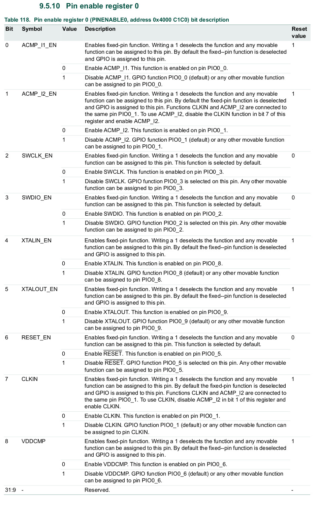
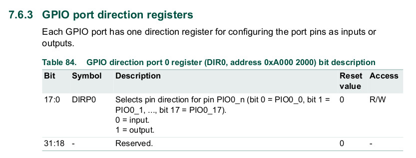
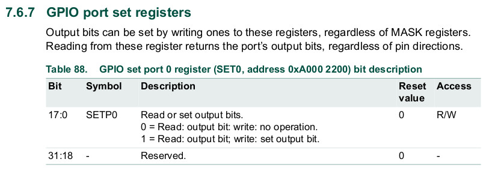
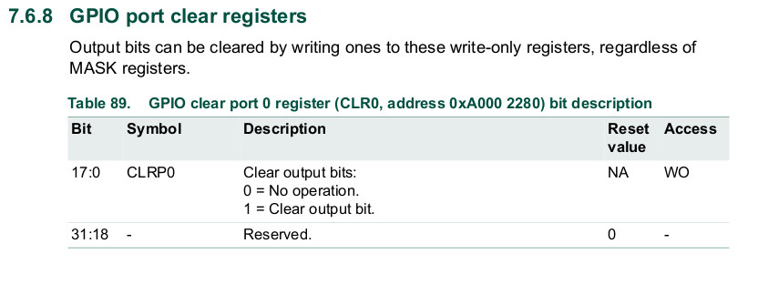
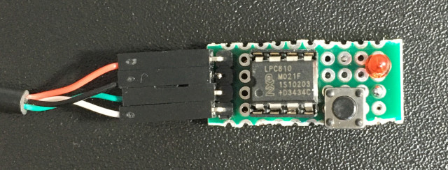
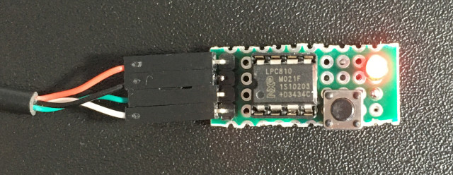

參考資訊：
https://www-users.cs.york.ac.uk/~pcc/Circuits/LPC800/data/lpc810.html
https://github.com/microbuilder/LPC810_CodeBase/blob/master/doc/LPC81x%20User%20Manual.pdf
預設PIO0_2是SWDIO




.cpu cortex-m0
.thumb
.equ PINENABLE0, 0x4000c1c0
.equ GPIO_DIR0, 0xa0002000
.equ GPIO_PIN0, 0xa0002100
.equ GPIO_SET0, 0xa0002200
.equ GPIO_CLR0, 0xa0002280
.equ BIT1, 1
.equ BIT2, 2
.thumb_func
.global _start
_start:
.word 0x10000400 @ stacktop
.word reset @ reset
.word hang @ nmi
.word hang @ hardfault
.word hang @ reserved
.word hang @ reserved
.word hang @ reserved
.word hang @ reserved
.word hang @ reserved
.word hang @ reserved
.word hang @ reserved
.word hang @ svcall
.word hang @ reserved
.word hang @ reserved
.word hang @ pendsv
.word hang @ systick
.thumb_func
reset:
ldr r0, =PINENABLE0
ldr r1, =0xffffffff
str r1, [r0]
ldr r0, =GPIO_DIR0
ldr r1, =(1 << BIT2)
str r1, [r0]
loop:
ldr r0, =GPIO_SET0
ldr r1, =(1 << BIT2)
str r1, [r0]
bl delay
ldr r0, =GPIO_CLR0
ldr r1, =(1 << BIT2)
str r1, [r0]
bl delay
b loop
delay:
push {lr}
ldr r0, =3000000
1:
nop
sub r0, #1
bne 1b
pop {pc}
hang:
b .
.end
main.ld
OUTPUT_FORMAT("elf32-littlearm", "elf32-bigarm", "elf32-littlearm")
OUTPUT_ARCH(arm)
MEMORY {
ROM (rx) : ORIGIN = 0x00000000, LENGTH = 0x00001000
RAM (rwx) : ORIGIN = 0x10000000, LENGTH = 0x00000400
}
SECTIONS {
. = 0x0;
.text : { *(.text*) } > ROM
.rodata : { *(.rodata*) } > ROM
.bss : { *(.bss*) } > RAM
. = ALIGN(8);
}
接著按下按鍵(PIO0_1接地)並接上電源以及UART TX、RX，使用如下方式編譯、燒錄
$ arm-none-eabi-as -mcpu=cortex-m0 -mthumb main.s -o main.o
$ arm-none-eabi-ld -o main.elf -T main.ld main.o
$ arm-none-eabi-objcopy main.elf main.bin -O binary
$ arm-none-eabi-objcopy main.elf main.hex -O ihex
$ sudo lpc21isp -wipe -control -verify -debug2 ./main.hex /dev/ttyUSB0 9600 12000
Verify after copy RAM to Flash.
lpc21isp version 1.97
File ./main.hex:
loaded...
converted to binary format...
image size : 140
Image size : 140
Synchronizing (ESC to abort)...... OK
Read bootcode version: 4
13
Read part ID: LPC810M021FN8, 4 kiB FLASH / 1 kiB SRAM (0x00008100)
Will start programming at Sector 1 if possible, and conclude with Sector 0 to ensure that checksum is written last.
Wiping Device. OK
Sector 0: ..
Download Finished and Verified correct... taking 1 seconds
Now launching the brand new code
完成

